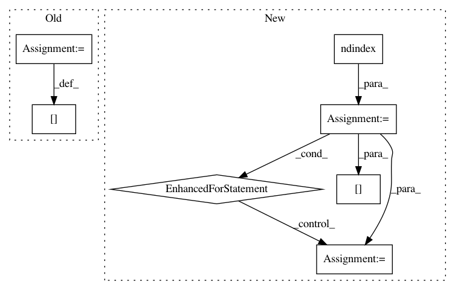

e7baa93f4f397c2955cb30c83bf483f26e67f2f8,arviz/stats/diagnostics.py,,_neff_ufunc,#Any#,107
Before Change
for idxs in itertools.product(*[np.arange(d) for d in target.shape]):
idxs = list(idxs)
idxs.append(Ellipsis)
target[tuple(idxs)] = _get_neff(ary[tuple(idxs)])
return target
def autocorr(x):
After Change
`xr.apply_ufunc(_neff_ufunc, ..., input_core_dims=(("chain", "draw"),))
target = np.empty(ary.shape[:-2])
for idx in np.ndindex(target.shape):
target[idx] = _get_neff(ary[idx])
return target
def _get_neff(sample_array):
In pattern: SUPERPATTERN
Frequency: 3
Non-data size: 7
Instances
Project Name: arviz-devs/arviz
Commit Name: e7baa93f4f397c2955cb30c83bf483f26e67f2f8
Time: 2018-10-08
Author: ahartikainen@users.noreply.github.com
File Name: arviz/stats/diagnostics.py
Class Name:
Method Name: _neff_ufunc
Project Name: scipy/scipy
Commit Name: 45f27df49ba3d0f90fc16d7320986447492cf6e2
Time: 2020-07-07
Author: peterbell10@live.co.uk
File Name: scipy/spatial/kdtree.py
Class Name: KDTree
Method Name: query
Project Name: arviz-devs/arviz
Commit Name: e7baa93f4f397c2955cb30c83bf483f26e67f2f8
Time: 2018-10-08
Author: ahartikainen@users.noreply.github.com
File Name: arviz/stats/diagnostics.py
Class Name:
Method Name: _rhat_ufunc